7．分析的状况
波尔查诺、柯西、魏尔斯特拉斯和其他人的工作给分析提供了严密性。这些工作把微积分及其推广从对几何概念、运动和直觉了解的完全依赖中解放出来。这些研究一开始就造成了巨大的轰动。在一次科学会议上，柯西提出了级数收敛性的理论，会后拉普拉斯（Pierre-Simon de Laplace）急忙赶回家并隐居起来，直到他查完他的《天体力学》（Mécanique céleste）中所用到的级数。幸亏书中用到的每一个级数都是收敛的。当魏尔斯特拉斯的工作通过他的讲演为人们所知道时，其影响甚至更为显著。把若尔当的《分析教程》（Cours d'analyse）第一版（1882—1887）同第二版（1893—1896）、第三版（3卷，1909—1915）进行比较，就可以看出严密性的改进。许多其他的专题论文体现了新的严密性。
分析的严密化并不证明就是基础研究的终结。首先，所有的研究工作实际上都是以承认实数系为先决条件的，而实数系仍然是没有条理的。我们将看到魏尔斯特拉斯在19世纪40年代就考虑了无理数的问题，除他之外所有其他的人都认为没有必要去研究数系的逻辑基础。看来即使是最大的数学家们都必须逐步发挥他们的才智方能了解严密性的需要。关于实数系的逻辑基础方面的工作不久就跟着开展起来了（见第41章）。
连续函数可以没有导数，不连续函数可以积分，这些发现，以及由狄利克雷和黎曼关于傅里叶级数方面的工作清楚地显示了对不连续函数的新的见解，还有对函数的间断性的种类和程度的研究，使数学家们认识到，函数的精确研究扩充了微积分中以及分析的通常分支中用到的函数，在这些分支中可微性的要求通常限制了函数类。对函数的研究在20世纪继续进行着，结果产生了数学的一个新分支，就是所谓的实变函数论（见第44章）。
和数学中的一切新运动一样，分析的严密化不是没有遭到反对。关于是否应该从事分析的改进就有许多争论。引进来的独特的函数被攻击为奇怪而无意义的函数、古怪的函数，也许比较复杂却也不比幻方更重要的数学游戏。这些函数还被看作是一种变态或是函数的不健康部分，而且还被认为在纯粹和应用数学的重要问题中是不会出现的。违反了公认为是完美的法则的这些新的函数，被看作是无秩序和混乱的标志，而这种无秩序和混乱是对以前形成的秩序和协调的嘲笑。现在为了叙述一个正确的定理必须加上的许多前提，被认为是学究式的，破坏了18世纪古典数学的优美，用杜波依斯-雷蒙的话来说，这种优美“就像在天堂里一样”。人们对这些新的函数的琐碎细节感到不满，因为它们掩盖了主要的思想。
尤其是庞加莱怀疑这种新的研究。他说(67)：
逻辑有时候产生怪物。半个世纪以来我们已经看到了一大堆离奇古怪的函数，它们被弄得愈来愈不像那些能解决问题的真正的函数。多一点连续性或少一点连续性，多几阶导数，如此之类。诚然，从逻辑的观点看来，这些陌生的函数是最一般的；另一方面，不用去找就碰到的函数以及遵从简单规律的函数却是一种特殊情形，这种情形仅只是函数中很小的一角。
过去人们为了一个实际的目的而创造一个新的函数；今天人们为了说明先辈在推理方面的不足而故意造出这些函数来，而从这些函数所能推出来的东西也就是仅此而已。
埃尔米特在给斯蒂尔切斯（Thomas Jan Stieltjes）的一封信中说：“我怀着惊恐的心情对不可导函数的令人痛惜的祸害感到厌恶。”
杜波依斯-雷蒙(68)表达了另一种不同的意见。他担心分析的算术化会使分析和几何从而也和直观以及物理思考脱离开，这就使分析变成一种“简单的符号游戏，在那里所写下的符号具有在国际象棋和纸牌游戏中的棋子所具有的任意意义”。
阿贝尔和柯西明显地排除发散级数引起了最大的争论。阿贝尔在1826年写给霍尔姆伯的信中说(69)：
发散级数是魔鬼的发明。把不管什么样的任何证明建立在发散级数的基础之上都是一种耻辱。利用发散级数人们想要什么结论就可以得到什么结论，而这也是为什么发散级数已经产生了如此多的谬论和悖论的原因……对所有这一切我变得异常关心，因为除几何级数外，在全部数学中曾被严格地确定出和的单个无穷级数是不存在的。换句话说，数学中最重要的事情也就是那些具有最小基础的事情。
但是阿贝尔表示了某种担心，即这样一来是否忽视了一种好的思想，因为他在信中继续写道：“尽管这种级数是令人非常惊奇的，但它们中的大多数都是正确的。我正试图为这种正确性寻找理由；这是一个极其有趣的问题。”阿贝尔死时很年轻，并没有从事这方面的研究。
柯西对于排斥发散级数也有些不安。他在《教程》（1821）的引论中说：“我曾被迫承认各种各样多少有点不幸的命题，例如发散级数不能求和。”在1827年(70)出版的他写于1815年的关于水波的得奖论文所加的注释中，柯西却不管这个结论而继续使用发散级数。他决心去研究为什么发散级数被证明这样有用的问题，而且事实上他最终是接近于认识到这个原因的（第47章）。
法国数学家采纳了柯西的排除发散级数的做法。但是英国和德国的数学家没有这样做。在英国，剑桥学派求助于形式的永恒性原理（the principle of permanence of form），为使用发散级数辩护（第32章第1节）。对于发散级数，这个形式的永恒性原理首先是由伍德豪斯（Robert Woodhouse，1773—1827）使用的。在《解析计算原理》（The Principles of Analytic Calculation）（1803，p．3）中他指出，在方程
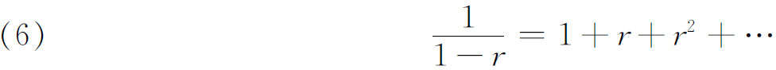
中，等号比之只表示数值上相等，具有“更广泛的意义”。因此无论这个级数发散或收敛，方程（6）都成立。
皮科克（George Peacock）也应用形式的永恒性原理对发散级数进行运算(71)。在第267页上他说：“这样，因为对于r＜1，上面的（6）式成立，于是对于r＝1我们就真的得到了∞＝1＋1＋…。对于r＞1，我们在左边得到一个负数，而由于在右端的项不断增大，故右端比∞更大。”这就是皮科克接受的结论。他试图确立的论点是：对于一切r，级数都能代表
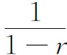
。他说：如果认为代数运算是一般的，而且认为服从这种运算的符号在数值上没有限制，那么想要回避发散级数的形成就和回避收敛级数的形成一样都是不可能的；而且如果先不谈这种级数本身，而把这种级数看作是一些可定义的运算的结果，那么检查相继项的数值之间的关系就不是太重要的事情了，虽然在断定级数收敛或发散时这样做或许是必要的；因为在这些情形下，必须认为这些级数是它们的母函数的等价形式，就这些运算的目的来说，可以认为它们具有等价的性质……企图在符号运算中排斥使用发散级数，必将对代数公式和运算的普遍性强加上一种限制，这是完全违反科学精神的……这样做必将导致如下的大量而又麻烦的情形：几乎所有的代数运算所具有的大部分确定性和简单性都被剥夺了。
德摩根（Augustus De Morgan）虽然比皮科克更准确更有意识地知道发散级数中的困难，然而他还是在英国学派的影响之下，而且从他不顾这些困难而使用发散级数所得到的一些结果也给人这样的印象。1844年他在一篇尖锐但混乱的论文《发散级数》（Divergent Series）(72)中以这样的话开始：“我相信本文的标题一般是可以接受的，这个标题描述了还保留着初等性质（特征）的仅有的主题，在这方面，关于结果的绝对正确或错误，数学家之间存在着严重的分歧。”德摩根的这种见解，他早在他的《微分和积分计算》（Differential and Integral Calculus）(73)中就已经宣布了：“代数的历史向我们表明，没有什么事情是比排斥自然出现的方法更没有根据了，排斥这种方法的理由是在一个或几个显然正确的情形中由于使用了这种方法而导致错误的结论。这就告诉我们要小心使用但不应该拒绝这种方法；如果宁愿拒绝而不是小心使用的话，那么负量，尤其是它的平方根，就会成为代数进步的一个有力的障碍……而且甚至发散级数的拒绝者们所毫不担心地涉及的那些巨大的分析领域也就不会有那么多发现，更会缺少优美而永久的发现……我在反对一本在我看来是故意终止发现的进展的教科书时，所采取的座右铭包含在一个词和一个符号中——记住
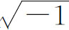
。”他区分一个级数的算术意义和代数意义。代数意义在一切情况下总成立。为了解释由于使用发散级数而造成的某些错误结论，他在1844年的论文中（p．187）说，积分法是一个算术运算而不是一个代数运算，因此在没有对发散级数进行进一步思考的时候不能对它进行积分。但是从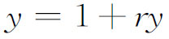
出发，并在右端用1＋ry去代替y，并这样不断地做下去而导出的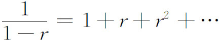
却因为它是代数的而为德摩根所接受。类似地，从
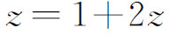
得到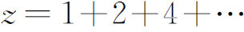
。因此－1＝1＋2＋4＋…也是对的。他接受那个时代的三角级数的全部理论，但如果有人给出一个1－1＋1－1＋…不等于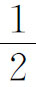
的例子（见第20章），他就会要拒绝这种理论。为了采用发散级数，另外有许多杰出的英国数学家给出了其他种种辩护，有些辩护回到了尼古拉·伯努利（Nicholas Bernoulli）的一种论证（第20章第7节），即级数（6）包含一个余项r∞或
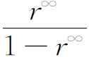
。这是必须考虑到的（虽然他们没有指出怎样考虑）。另外一些数学家说：一个发散级数在代数上是真的而在算术上是假的。某些德国数学家用的是和皮科克一样的论证，虽然他们用的是不同的言词，诸如语法的运算是和算术的运算相对立的，或说文字的运算和数字的运算是对立的。欧姆（Martin Ohm）(74)说：“用一个无穷级数（把任何收敛或发散的问题放在一边）去表示一个表达式是完全合适的，如果人们能够肯定已经有了级数展开的正确规律的话。仅当级数收敛时人们才能说一个无穷级数的值。”在德国拥护发散级数的论证，持续进行了几十年。
虽然为了级数的利益而提出的许多论证或许是牵强附会的，但是为使用发散级数所作的辩护却远非表面看来那样愚蠢。首先，在整个18世纪的分析中很少注意严密性或证明，而且因为所得到的结论几乎总是正确的，这样做是可以接受的。因此数学家们就变得习惯于不严密的程序和论证。更确当些，可以说许多概念和运算，例如复数，曾经造成困窘，但在被充分了解之后仍被证明是正确的。因此数学家们就想到，当人们获得了对发散级数的一个比较好的了解时，使用发散级数的困难也将会得到澄清，因而发散级数也将被证明为合法的。此外对发散级数进行运算，常常与分析中其他几乎没有弄懂的运算——诸如交换极限次序、不连续函数的积分和无穷区间上的积分——混在一起，这就使发散级数的捍卫者们能以坚持把由于用了发散级数而造成的错误结论归咎于别的困难的原因。
一个也许成了定论的见解是：当一个解析函数在某个区域内表示成一个幂级数时（魏尔斯特拉斯把它叫做一个元素），这个级数确实具有函数的“代数的”或“语法的”性质，而且在超出元素的收敛区域时仍然有这种性质。解析开拓的程序就用了这一事实。实际上，在发散级数的概念中确实具有使发散级数成为可用的有根据的数学实质。但是认识这种实质并且最终接受发散级数，还必须等待无穷级数的新的理论（第47章）。
参考书目
Abel，N．H．：Œuvres complètes，2 vols．，1881，Johnson Reprint Corp．，1964．
Abel，N．H．：Mémorial publié à l'occasion du centenaire de sa ncissance，Jacob Dybwad，1902．Letters to and from Abel．
Bolzano，B．：Rein analytischer Beweis des Lehrsatzes，dass zwischen je zwei Werthen，die ein entgegengesetztes Resultat gewähren，wenigstens eine reele Wurzel der Gleichung liege，Gottlieb Hass，Prague，1817＝Abh．Königl．Böhm．Ges．der Wiss．，（3），5，1814-1817，pub．1818＝Ostwald's Klassiker der exakten Wissenscha ften ＃153，1905，3-43．未包含在波尔查诺的Schriften中。
Bolzano，B．：Paradoxes of the Infinite，Routledge and Kegan Paul，1950．包含波尔查诺工作的一个概述。
Bolzano，B．：Schriften，5 vols．，Königlichen Böhmischen Gesellschaft der Wissenschaften，1930-1948．
Boyer，Carl B．：The Concepts of the Calculus，Dover（reprint），1949，Chap．7．
Burkhardt，H．：“Über den Gebrauch divergenter Reihen in der Zeit von 1750-1860，”Math．Ann．，70，1911，169-206．
Burkhardt，H．：“Trigonometrische Reihe und Integrale，”Encyk．der Math．Wiss．，ⅡA12，819-1354，B．G．Teubner，1904-1916．
Cantor，Georg：Gesammelte Abhandlungen（1932），Georg Olms（reprint），1962．
Cauchy，A．L．：Œuvres，（2），Gauthier-Villars，1897-1899，Vols．3 and 4．
Dauben，J．W．：“The Trigonometric Background to Georg Cantor's Theory of Sets，”Archive for History of Exact Sciences，7，1971，181-216．
Dirichlet，P．G．L．：Werke，2 vols．，Georg Reimer，1889-1897，Chelsea（reprint），1969．
Du Bois-Reymond，Paul：Zwei Abhandlungen über unendliche und trigonometrische Reihen（1871 and 1874），Ostwald's Klassiker ＃185；Wilhelm Engelmann，1913．
Freudenthal，H．：“Did Cauchy Plagiarize Bolzano？”，Archive for History of Exact Sciences，7，1971，375-392．
Gibson，G．A．：“On the History of Fourier Series，”Proc．Edinburgh Math．Soc．，11，1892/1893，137-166．
Grattan-Guinness，Ⅰ．：“Bolzano，Cauchy and the‘New Analysis’of the Nineteenth Century，”Archive for History of Exact Sciences，6，1970，372-400．
Grattan-Guinness，Ⅰ．：The Development of the Foundations of Mathematical Analysis from Euler to Riemann，Massachusetts Institute of Technology Press，1970．
Hawkins，Thomas W．，Jr．：Lebesgue's Theory of Integration：Its Origins and Development，University of Wisconsin Press，1970，Chaps．1-3．
Manheim，Jerome H．：The Genesis of Point Set Topology，Macmillan，1964，Chaps．1-4．
Pesin，Ivan N．：Classical and Modern Integration Theories，Academic Press，1970，Chap．1．
Pringsheim，A．：“Irrationalzahlen und Konvergenz unendlichen Prozesse，”Encyk．der Math．Wiss．，IA3，47-147，B．G．Teubner，1898-1904．
Reiff，R．：Geschichte der unendlichen Reihen，H．Lauppsche Buchhandlung，1889；Martin Sändig（重印），1969。
Riemann，Bernhard：Gesammelte mathematische Verke，第2版（1902），Dover（重印），1953。
Schlesinger，L．：“Über Gauss'Arbeiten zur Funktionenlehre，”Nachrichten König．Ges．der Wiss．zu Gött．，1912，Beiheft，1-43．亦见高斯全集102，77页以后。
Schoenflies，Arthur M．：“Die Entwicklung der Lehre von den Punktmannigfaltigkeiten，”Jahres．der Deut．Math．-Verein．，82，1899，1-250．
Singh，A．N．：“The Theory and Construction of Non-Differentiable Functions，”见E．W．Hobson：Squaring the Circle and Other Monographs，Chelsea（重印），1953。
Smith，David E．：A Source Book in Mathematics，Dover（重印），1959，Vol．1，286-291，Vol．2，635-637。
Stolz，O．：“B．Bolzanos Bedeutung in der Geschichte der Infinitesimalrechnung，”Math．Ann．，18，1881，255-279．
Weierstrass，Karl：Mathematische Werke，7卷，Mayer und Müller，1894-1927。
Young，Grace C．：“On Infinite Derivatives，”Quart．Jour．of Math．，47，1916，127-175．
————————————————————
(1) Œuvres，2，263-265．
(2) 1821，Œuvres，（2），Ⅲ．
(3) 1823，Œuvres，（2），Ⅳ，1-261．
(4) 1829，Œuvres，（2），Ⅳ，265-572．
(5) 1797；2nd ed．，1813＝Œuvres，9．
(6) 1801；2nd ed．，1806＝Œuvres，10．
(7) 3 vols．，lst ed．，1797-1800；2nd ed．，1810-1819．
(8) 英译本，p．430，Dover（重印），1955。
(9) Repertorium der Physik，1，1837，152-174＝Werke，1，135-160．
(10) Jour．für Math．，4，1829，157-169＝Werke，1，117-132．
(11) 考虑当x≠0时
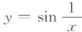
，而当x＝0时y＝0。这个函数取遍从x的一个负值所对应的函数值到x的一个正值所对应的函数值之间的一切值。但是这个函数在x＝0点不连续。(12) Jour．für Math．，71，1870，353-365．
(13) Jour．für Math．，74，1872，172-188．
(14) Ann．de l'Ecole Norm．Sup．，（3），12，1895，9-55．
(15) Acta Math．，19，1895，1-61．
(16) 1823，Œuvres，（2），4，22．
(17) 拉克鲁瓦在他的《专著》的第一版中早就这样定义dy了。
(18) Schriften，1，Prague，1930．这是由雷赫利克（K．Rychlik）编辑出版的，布拉格，1930。
(19) 1922年雷赫利克证明了这个函数是到处不可微的。见柯瓦列夫斯基（Gerhard Kowalewski），“Über Bolzanos nichtdifferenzierbare stetige Funktion，”Acta Math．，44，1923，315-319。这篇文章包括波尔查诺函数的一个描述。
(20) Abh．der Ges．der Wiss．zu Gött．，13，1868，87-132＝Werke，227-264．
(21) Bull．des Sci．Math．，（2），14，1890，142-160．
(22) Werke，2，71-74．
(23) Jour．für Math．，79，1875，21-37．
(24) 其他的例子和参考文献可以在汤森（E．J．Townsend）的Functions of Real Variables（Henry Holt，1928）和霍布森（E．W．Hobson）的The Theory of Functions of a Real Variable 2卷第6章（Dover，1957）中找到。
(25) Résumé，81-84＝Œuvres，（2），4，122-127．
(26) 为简单起见，我们用Δxi表示子区间及其长度。
(27) Ann．de l'Ecole Norm．Sup．，（2），4，1875，57-112．
(28) Gior．di Mat．，19，1881，333-372．
(29) 发表在塞雷特（J．A．Serret）的Cours de calcul différentiel et intégral，1，1868，17-19。
(30) Proc．Lon．Math．Soc．，6，1875，140-153＝Coll．Papers，2，86-100．
(31) Mémoire（1814）；特别见Œuvres，（1），1，p．394。
(32) Zeit．für Math．und Phys．，21，1876，224-227．
(33) Zeit．für Math．und Phys．，23，1878，67-68．
(34) Jour．für Math．，94，1883，273-290．
(35) Comm．Soc．Gott．，2，1813＝Werke，3，125-162和207-229．
(36) Werke，3，129．
(37) Werke，3，156．
(38) Jour．de l'Ecole Poly．，19，1823，404-509．
(39) 序列的极限的正确概念是由沃利斯在1655年给出的（Opera，1695，1，382），但是未被人们采用。
(40) Exercices de mathématiques，1，1826，5＝Œuvres，（2），6，38-42．
(41) 1823，Œuvres，（2），4，p．237．
(42) Exercices de mathématiques，2，1827＝Œuvres，（2），7，160．
(43) Œuvres，2，259．
(44) Jour．für Math．，1，1826，311-339＝Œuvres，1，219-250．
(45) Œuvres，1，224．
(46) 级数（2）是
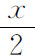
在区间－π＜x＜π中的傅里叶展开。因此这个级数表示周期函数，在每个2π长的区间中是 。于是当x从左边趋于（2n＋1）π时级数收敛到
。于是当x从左边趋于（2n＋1）π时级数收敛到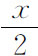
，而当x从右边趋于（2n＋1）π时级数收敛2-2到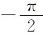
。(47) Trans．Camb．Phil．Soc．，85，1848，533-583＝Math．and Phys．Papers，1，236-313．
(48) Abh．der Bayer．Akad．der Wiss．，1847/1849，379-394．
(49) Papers，1，242，255，268和283。
(50) Comp．Rend．，36，1853，454-459＝Œuvres，（1），12，30-36．
(51) Werke，1，67-85．
(52) Jour，für Math．，71，1870，353-365．
(53) Sitzungsber．Akad．Wiss．zu Berlin，1885，633-639，789-905＝Werke，3，1-37．
(54) Abh．König．Akad．der Wiss．，Berlin，1837，45-81＝Werke，1，313-342＝Jour．de Math．，4，1839，393-422．
(55) Jour．für Math．，4，1829，157-169＝Werke，1，117-132．
(56) Abh．der Ges．der Wiss．zu Gött．，13，1868，87-132＝Werke，227-264．
(57) Jour．für Math．，71，1870，353-365．
(58) Jour．für Math．，72，1870，139-142＝Ges．Abh．，80-83．
(59) Jour．für Math．，73，1871，294-296＝Ges．Abh．，84-86．
(60) Math．Ann．，5，1872，123-132＝Ges．Abh．，92-102．
(61) 细节见霍布森（E．W．Hobson），The Theory of Functions of a Real Variable，Ⅱ，656-698。
(62) Nachrichten König．Ges．der Wiss．zu Gött．，1873，571-582．
(63) Abh．der Bayer．Akad．der Wiss．，12，1876，117-166．
(64) Math．Ann．，22，1883，260-268．
(65) Comp．Rend．，92，1881，228-230＝Œuvres，4，393-395和Cours d'analyse，2，第1版，1882，Ch．V。
(66) Cours d'analyse，第二版，1893，1，67-72。
(67) L'Enseignement mathématique，11，1899，157-162＝Œuvres，11，129-134．
(68) Théorie générale des fonctions，1887，61．
(69) Œuvres，2，256．
(70) Mém．des sav．étrangers，1，1827，3-312；见Œuvres，（1），1，238，277，286。
(71) Report on the Recent Progress and Present State of Certain Branches of Analysis，Brit．Assn．for Adv．of Science，3，1833，185-352．
(72) Trans．Camb．Philo．Soc．，8，PartⅡ，1844，182-203，1849出版。
(73) London，1842，p．566．
(74) Aufsätze aus dem Gebeit der höheren Mathematik（高等数学领域短文集，1823）。